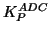
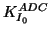

Next: Times
Up: Virtual AFM Box
Previous: Parameters for the Automatic
Contents
Parameters for the ADC:

(in m*s), initial

(in m, only for approach at stage 3), working
(in
m, for any other stage) as in Eq. (32) of section 2.1.4.
Parameters: ,
,
Default: 7.0d-11, 50.d-9, 5.d-9
Example: PLL_ADC{P,I0,I}
1.d-13 1.d-9 1.d-9
Lev Kantorovich
2005-08-04